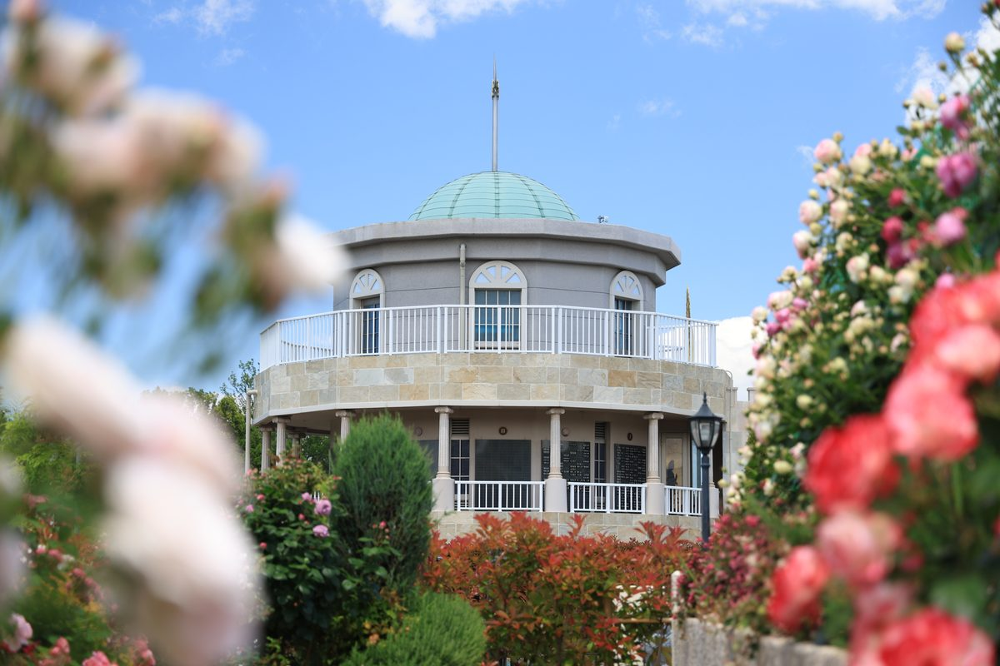
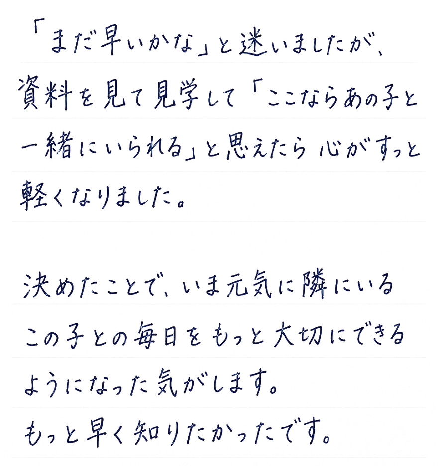
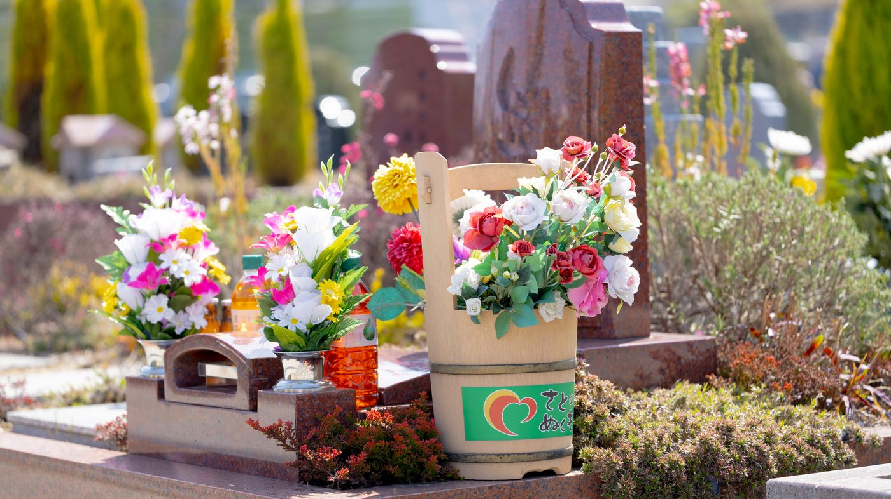

大切な小さな家族を
ひとりぼっちにさせない
最後までずっと一緒に眠れる
供養のカタチ
ペットと一緒に入れるお墓
あなたはペットと話したい
と思ったことはありませんか？
「あの子と少しでも話せたら、、、」 叶わないような願いと 感じるかもしれません。 けど、心のより処があるだけで もしかすると、、、

話せているような
気がする
我が子のお墓の前で 手を合わせると 一緒に過ごした思い出が 溢れ出してきます。
気づけば、
あの子に話しかけている
——そんな気がするという方が たくさんおられます。 ひとりぼっちにさせたくない というご家族の想いを 私たちも同じ気持ちで お預かりしています。
私たちの想いを
動画でご覧ください
かつてはこのように考えられる方は 少なくありませんでした。
しかし最近では、ペットは大切な家族の 一員と考えられる方も増え 一緒に眠りたいと思っている人も 多くなってきています。
ペットと一緒のお墓を選ぶ前に
知ってほしいこと
実は、多くの霊園には
埋葬期限があります。
※期限後はご遺骨を骨壷から出し一つの場所にまとめて埋葬・供養されます

当園は、埋葬期限なく
ずっと一緒に眠り続けられます。
他の子の遺骨と混ざることに抵抗がある
家族だったから、ずっと一緒に眠り続けたい
——そう思い後悔のない供養を考える方に当霊園は選ばれています。
一歩を踏み出した方の声

※掲載内容はイメージです。実際のお客様の声の取得後に差し替えてください。
私たちの想い
ご家族さまの想いに応える
霊園でありたい
私たち 美原東ロイヤルメモリアルパークは 単なるお墓を建てることを お客様に提供しているわけでは ありません。

故人やご先祖様のお墓参りを 家族みんなで楽しめる墓地に したいと考えています。
園内の紹介動画をご覧ください。
選ばれる理由
心から明るく手を合わせられる
ための3つのサービス
01花や緑が溢れる
四季折々の庭園空間

「霊園」と聞くと気が重くなる方もいます。ここは花と緑が咲き誇り、四季で表情を変える場所。季節の自然に癒されながら、明るい気持ちでお参りいただけます。
02無料送迎・
バリアフリー対応

何歳になっても通えるよう、駅からの無料送迎とバリアフリーを整えています。足腰が弱っても、家族に負担をかけずご自身で会いに行けます。※無料送迎は指定駅から・要予約
03毎日の行き届いた清掃

墓石を探し、枯葉の掃除から始める——そんな負担はありません。園内は毎日徹底して清掃。いつ来ても、あの子をきれいな場所でお迎えします。
お客様の声
ペットを見送ったご家族の声
16年連れ添った子を見送ったあと、「この子だけ別の場所」がどうしても受け入れられませんでした。一緒に眠れるお墓があると知ったとき、夫婦で涙が出ました。今は「先に行って待っててね」と声をかけられます。
ペット霊園と人のお墓の二か所にお参りするのは体力的にも心にも負担でした。ここなら一度にみんなに会える。園内が明るくてお参りというより「会いに行く」感覚です。
※掲載内容はイメージです。実際のお客様の声の取得後に差し替えてください。
資料請求・ご見学
あの子と眠れる区画をまずは資料でご覧ください。
区画の写真・料金・園内の雰囲気がわかる資料を無料でお届けします。
無理な営業はいたしません
資料請求やご見学のあとにしつこくお電話や訪問をすることはありません。ご家族のペースでゆっくりお考えください。
お参りに行けばあの子がそこにいる。
晴れた日に花を持って霊園へ。
墓前に手を合わせれば
目の前に大切なあの子がいる。
「元気にしてた？」「みんな一緒だよ」
いつかご自身が その時を迎えたあとも 家族全員が同じ場所に揃い続ける。 それは遺されるご家族への いちばんやさしい贈りものになります。


お問い合わせ
「ずっと一緒だよ」の約束をここから。
資料請求・ご見学は無料です。 大切な家族との「これから」を 安心して考えられる お手伝いをいたします。